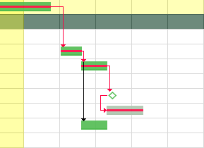
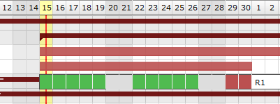

The Gantt chart is a tool used in scheduling and project management and allowing to visualize in time the various tasks composing a project.
It is a representation of a connected graph, evaluated and oriented, which makes it possible to graphically represent the progress of the project.
Note
For large projects, with many sub-projects and activities, we limit the number of lines to display so as not to deteriorate performance, even if the project selector has already contextualized the display
When you make a modification on an element of your project, the project must then be recalculated to take it into account.
You have the option of using the automatic calculation function, which, if you make a modification on the planning screen, and only on this screen, will immediately take this modification into account.
If the modification is made on another screen, even if you have selected automatic calculation then, you will have to restart the calculation on the planning screen.
Click on to start the activity planning calculation.
A popup window appears with the list of projects.
The check boxes allow you to select one or more projects to recalculate.
If you have selected one or more projects with Project Selector then the selected projects will be automatically checked.
Choose the date on which you want to recalculate the project.
By checking the “Hide unselected projects” box, you will only have the projects selected in the project selector and they will be automatically checked.
Overuse
The overuse option allows you to allocate to all the resources and this, on the projects of your choice, maximum overbooking.
This allows you to see the amount of work that is overused for the resources assigned to the task for each period of time.
Warning
This function is dangerous, it does not reflect reality.
For this reason, by default, it is not activated, even for the administrator.
Swith the button to activate automatic calculation on each change.
Only works on the Gantt Planning view.
If the modification of an element is carried out on the dedicated screen of the element, then it is necessary to click again on BUTTON to restart the computation
All modifications about assignement (rate, name or numbers of resources, dates…) done are not displayed on the new planning screen until having, for this purpose, activited the planning calculation, either in an automatic run plan or not.
On the contrary, the screen planning will not change even if modifications have been loaded yet.
Automatic calculation
Differential calculation = calculation of projects that require a recalculation.
Complete calculation = calculation of all projects
The calculations are programmed according to a frequency of CRON type (every minute, every hour, at a given hour every day, at a given time on a given week day, …)
You can create as many baselines as you want per day, but you can only save one baseline per day. Each new baseline must replace the previous one.
Save baseline
Saved a baseline with the button .
Enter the project on which to create the baseline. The list of existing baselines, already registered, is available via this window. You can modify your baseline or delete it to save another one.
This option will be very useful for you to compare possible drifts and explain them.
Print and Export the Gantt chart
You can print directly on your printer or export in PDF format or in MS Project format
Print planning
Click on the button to print the Gantt chart in A4 and / or A3 format.
The print quality, despite printing or exporting on a reduced scale, remains very qualitative and offers very little loss of detail in the diagram.
Export planning to PDF
Allows to export planning to PDF format.
Export can be done horizontally (landscape) or vertically (portrait) in A4 and / or A3 format
with great detail even with a zoom
Export contains all details and links between tasks and also include a pagination.
And the option Repeat Headers allow you to print or export your planning in multiple pages
This feature will execute export on client side, in your browser. Thus the server will not be heavy loaded like standard PDF export does.
It is highly faster than standard PDF export.
Warning
This technically complex feature is highly dependent on the browser and is not compatible with all of them.
It is compatible with the latest versions of IE (v11), Firefox, Edge and Chrome. Otherwise, the old export function will be used.
Tip
Forced feature activation/deactivation
To enable this feature for all browsers, add the parameter $pdfPlanningBeta=’true’; in parameters.php file.
To disable if for all browsers, add the parameter $pdfPlanningBeta=’false’;
Default (when $pdfPlanningBeta parameter is not set) is enabled with Chrome, disabled with other browsers
Export planning to MS Project
You have the option of exporting XML in MS Project.
Click on the button to start the export.
A user parameter allows you to enter if you want to add the assignments when exporting the project to MS-Project format.
If not, the name of the resources will not be available in the MS-Project application
The critical path allows you to determine the total duration of your project. This is the longest sequence of tasks that must be completed for the project to be completed on time.
The Critical Chain, meanwhile, is a technique for planning and monitoring deadlines but has the same principle: take into account the constraints to determine the duration of the project and the critical tasks that may impact this duration.
One of these constraints is the taking into account of resource or skill limitations in addition to the dependencies between the tasks and the implementation of buffers, i.e. time reserves, in the critical chain and the secondary chains.
ProjeQtOr offers you a critical chain rather than a critical path, but for better understanding, the term Critical path has been retained.
click on the critical path check box to calculate and display the red path in the Gantt schedule.

The red net represents the critical path of the project.¶
Note
The tasks of the project which are not crossed by the critical path are elements which will not affect the duration of the project and, even modified, will not automatically involve a modification of this duration for the entire project.
Hide models project
You can display or hide the template type projects in the area list.
Condition: If a resource is not or is no longer available on an activity.
The calculator is trying to plan the workload. The resource assigned to the activity is unable to be planned for this task (absence, calendar, assignment or assignment periods, etc.); then the bar turns purple.
Condition: The capacity of the resource has been changed. It can be under capacity or over capacity. That is to say, it does less or more than its FTE.
Condition: graphical display of the dates consolidated by the group of planning elements for a project
CUSTOM COLORS
you can apply the color of your choice on the bars of the Gantt chart representing activities, milestones and meetings.
If the Planned end date> Validated end date then the bar should be colored red. In case you have set a custom color, this state will still be indicated
The successor can not begin before the beginning of the predecessor. Anyway, the successor can begin after the beginning of the predecessor.
End-End
The successor should not end after the end of the predecessor, which leads to planning “as late as possible”.
Anyway, the successor can end before the predecessor. Note that the successor “should” not end after the end of predecessor, but in some cases this will not be respected:
if the resource is already 100% used until the end of the successor
if the successor has another predecessor of type “End-Start” or “Start-Start” and the remaining time is not enough to complete the task
if the delay from the planning start date does not allow to complete the task
Strict mode for dependencies
The strict dependency mode forces the successor planning element not to start on the same day as the same predecessor but the next day. Even if the task is finished before the end of the day.
To have the successor start on the same day or before the end of the predecessor task, select NO for strict mode or you can also put a negative delay.
The task is planned to finish as soon as possible.
Note
For tasks “as soon as possible”, if no assignment is created but the validated work is defined, take the validated work as the default duration (instead of 1 days)
You have the possibility to define dates directly on the project.
If no other constraint is applied to the elements of the latter, the planning will start only from the dates entered on the project.
If the dates are too short compared to the assigned load, the excess load will be divided and added in the same way as the chosen mode.
So you can get full days even in regular mode in quarter day or half days.
Example with 8 days of workload to plan over 10 days with the Regular mode in half days between dates
The load is distributed regularly so as to respect the dates.

If the load is too high to meet the dates, the excess load will be distributed over the whole day after the validated end date and will therefore be late (red color)
Click on to organize the columns of the progress data view.
Click on to display the sub-menu.
Click on to display this screen in horizontal or vertical mode.
print and export
You can print directly on your printer or export in PDF format.
Print planning
Click on the button to print the Gantt chart in A4 and / or A3 format.
The print quality, despite printing or exporting on a reduced scale, remains very qualitative and offers very little loss of detail in the diagram.
Export planning to PDF
Allows to export planning to PDF format.
Export can be done horizontally (landscape) or vertically (portrait) in A4 and / or A3 format with great detail even with a zoom
Export contains all details and links between tasks and also include a pagination.
And the option Repeat Headers allow you to print or export your planning in multiple pages
This feature will execute export on client side, in your browser. Thus the server will not be heavy loaded like standard PDF export does.
It is highly faster than standard PDF export.
Warning
This technically complex feature is highly dependent on the browser and is not compatible with all of them.
It is compatible with the latest versions of IE (v11), Firefox, Edge and Chrome. Otherwise, the old export function will be used.
Tip
Forced feature activation/deactivation
To enable this feature for all browsers, add the parameter $pdfPlanningBeta=’true’; in parameters.php file.
To disable if for all browsers, add the parameter $pdfPlanningBeta=’false’;
Default (when $pdfPlanningBeta parameter is not set) is enabled with Chrome, disabled with other browsers
Display dates
This functionality allows to define columns displayed in the progress data view.
The display area allows you to filter the resources you want to display.
The screen is blank until you select the resource, the team or the organization.
The calendar is displayed for the resource or for all members of the selected team or organization.
These parameters are not exclusive, you can select team and organization.
Resource
Filter by resource on calendar display.
Team
Filter by team on calendar display.
Organization
Filter by organization on calendar display.
Project
Filter by project on calendar display.
Year
Select the year to display.
Month
Select the month to display.
Hide done items
You can hide the activities recorded in the “done” state in the displayed list.
Note
The selected parameters, except the month, always set by default to the current month, are saved as a user parameter.
When the user returns to the screen, he therefore finds the last parameters entered
List of Projects and activity
The list of activities displayed are in the planning mode “manual planning”. If no filter is selected (project, resource, organization …) then the screen does not display any data.
You cannot create new activities in manual planning mode from the intervention screen. You need to access the activities or schedule screen to create the new activity in manual planning mode. The new activity will then appear in the list.
Click on to access the activity screen and view its detail
FTE
In this calendar, we display graphically if we respect the quantity of people requested on the activity and on the half day.
Fill in an integer value for each activity to check.
If you enter 1, you expect at least one person to perform half a day on this activity.
A check is then carried out and takes into account all the resources assigned to each activity, and not only those selected and visible on the calendar.
If the field is left empty or at 0 then no control is carried out and the calendar will not display any green or red box.
Blue box
When you start to put in the workload but do not yet reach all of the expected FTEs.
Green Box
If the entry respects the workload constraint expected in FTE the box is green.
Example with a value of 2 in the FTE field for the selected activity.
This FTE value is defined for each half-day.
You must therefore have 2 effective persons planned for each half day whatever the resource or resources that will be provided.
Red Box
If the total entry is greater than the expected workload in FTE the box is red.
The box then turns red: the workload is higher than expected since we expected a person on this half day and on this activity
Non-colored box
There is no expected workload.
Interventions mode
The list of possible intervention methods is customizable.
This list can be modified via a setting screen in the list of values.
The saved modes will remain fixed for all projects and all teams.


{kind=link}
{kind=link}
 Activity planning calculation
Activity planning calculation to start the activity planning calculation.
to start the activity planning calculation. Automatic run plan
Automatic run plan Add a new planning element
Add a new planning element Advanced Filter
Advanced Filter Displayed columns
Displayed columns Display other options
Display other options{kind=link}
 Planning validation
Planning validation
 Save and show baseline
Save and show baseline{kind=link}
 Print and Export the Gantt chart
Print and Export the Gantt chartto print the Gantt chart in A4 and / or A3 format.
{kind=link}
 Other options: checkbox for display
Other options: checkbox for display

 Project
Project Project to recalculate (the Gant diagramm to display with the latest settings)
Project to recalculate (the Gant diagramm to display with the latest settings) Activity
Activity Milestone
Milestone Meeting
Meeting{kind=link}
{kind=link}
{kind=link}
 allows to reorder the planning elements.
allows to reorder the planning elements. to define the columns displayed.
to define the columns displayed.


on the corresponding section to add a dependency link.
to edit the dependency link.
to delete the corresponding dependency link.


End-Start
End-End
{kind=link}


{kind=link}
{kind=link}
{kind=link}
{kind=link}


 to view the projects on which resource activities depend.
to view the projects on which resource activities depend.
 to apply many filters. See: Advanced filters.
to apply many filters. See: Advanced filters. to display the sub-menu.
to display the sub-menu. to display this screen in horizontal or vertical mode.
to display this screen in horizontal or vertical mode.
 to access the activity screen and view its detail
to access the activity screen and view its detail